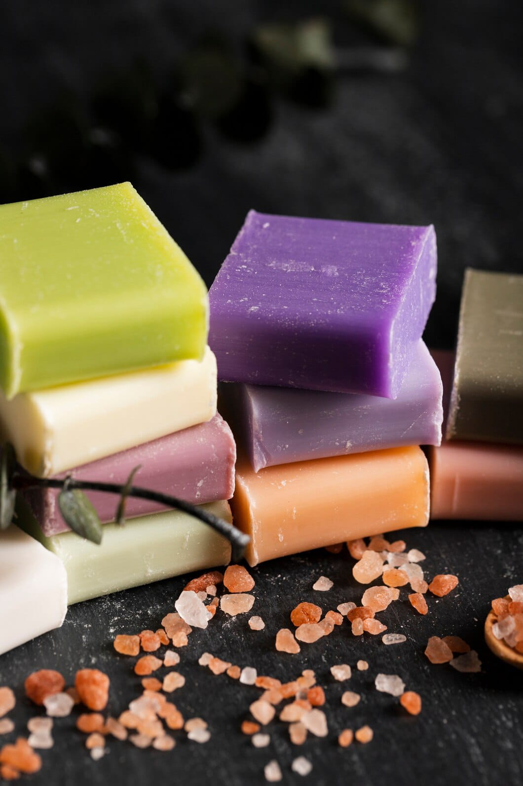
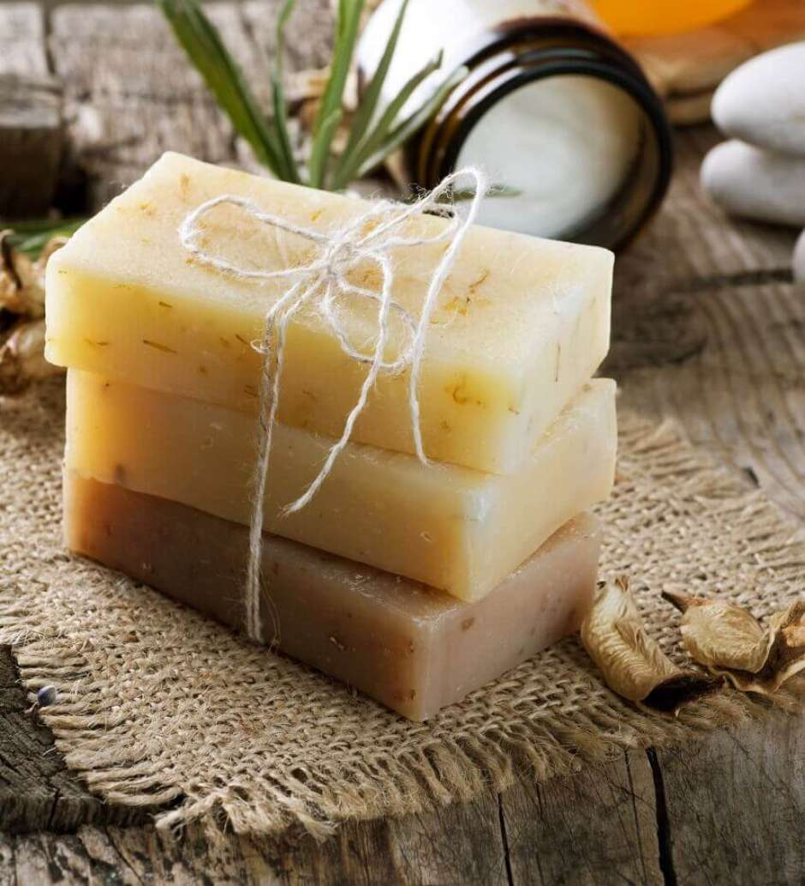

Receita do sabão
Ingredientes
- 1 kg de Soda cáustica
- 5 L de óleo de cozinha usado
- 1 L de água
- 1 L de água
- 1 copo (250mL) de sabão em pó
- 1 copo (250mL) de álcool etílico 96%
- 1 copo (250mL) de detergente de coco
Modo de preparo
Em um recipiente de plástico adicione o óleo, o sabão em pó, o detergente, e o álcool, misture até homogenar tudo.
Apos isso adicione a soda cáustica dissolvido na água e continue mexendo até endurecer.
Deixe o sabão descançar por 8 horas.
Outra receita
Ingredientes
- 1L de óleo usado
- 200ml de água
- 1 colher de açucar
- 2 colheres de bicarbonato de sódio
- 100ml de detergente
- 140 gramas de soda cáustica
Modo de preparo
Derreta a soda com água em um recipiente mechendo com cuidado adicionando o óleo e o detergente sem parar de mecher adicione o açucar e o bicarbonato, e agora é apenas continuar mechendo até ele dar a consistencia certa, logo em seguida despejar todo o conteúdo em outro recipiente apos isso esperar esfriar e endurecer
Video da receitaSabão
-

-
